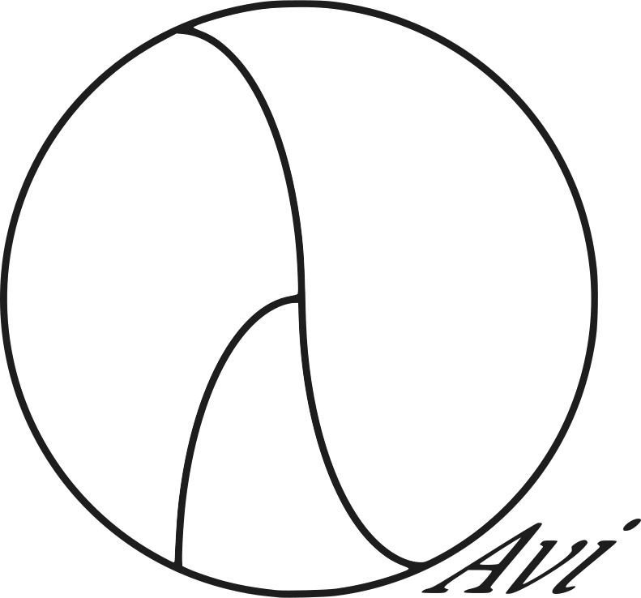

Alt Fine Foods
85 Saranac Avenue
Buffalo, New York 14216
Phone/fax 716-875-5683
bob@altfinefoods.com


Alt Fine Foods... Kosher Catering in Buffalo, NY.
Alt Fine Foods is Buffalo's only all-kosher caterer. We're ready to cater for your simcha, tour group, or even help when you want to sponsor a kiddush in your synagogue. We are a strictly kosher catering company, capable of providing either dairy or meat menus.

Alt Fine Foods is under the supervision of Va'ad HaKashrut of Buffalo
Alt Fine Foods website is maintained and updated by Avi Tapp
webmaster